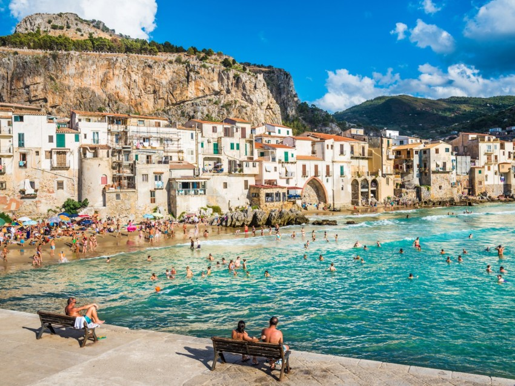
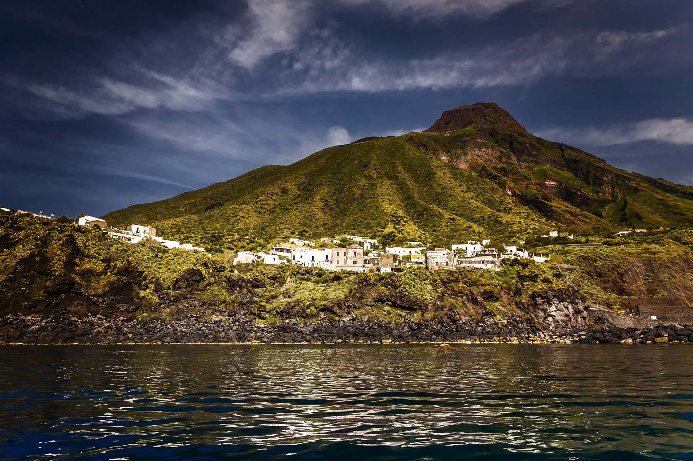
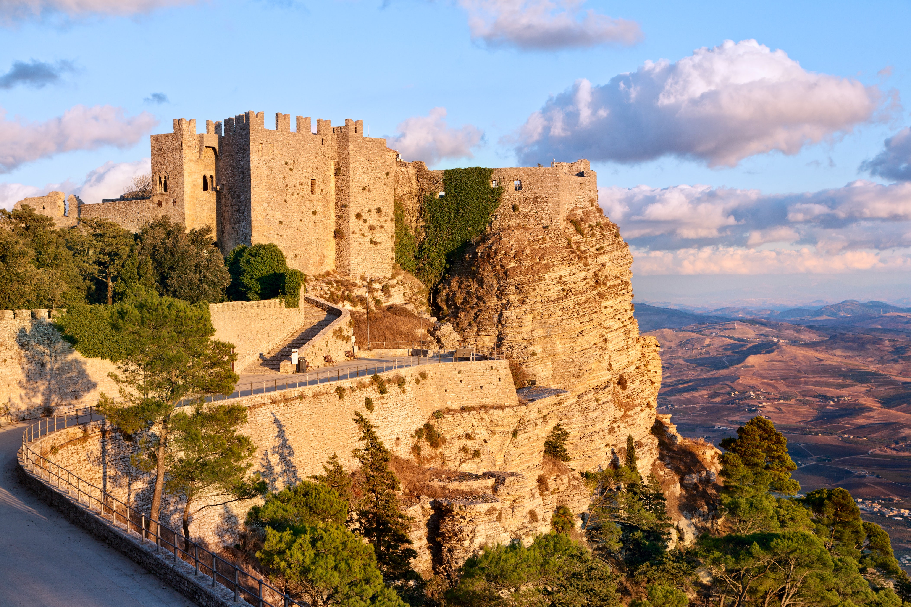
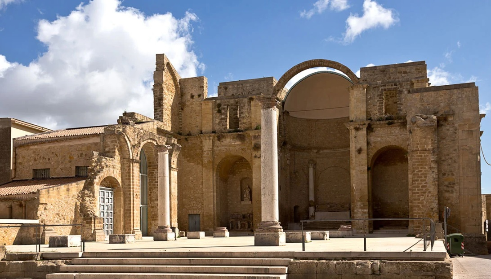
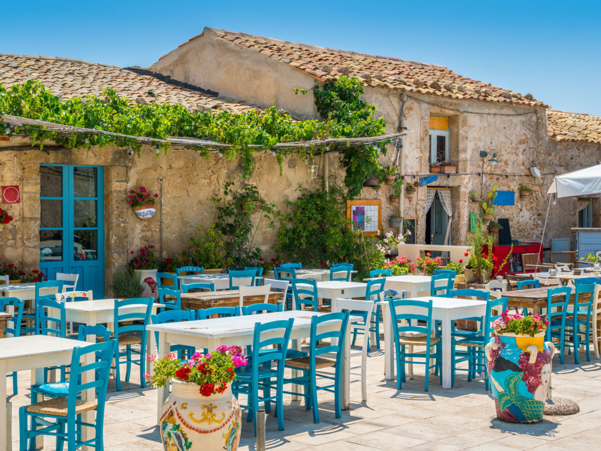

Questa meta affascinante si trova in provincia di Palermo, e forse fra i borghi siciliani è quello più famoso. Il centro storico è forse la parte più celebre e amata, insieme alle splendide spiagge: circondato com’è da una cinta muraria megalitica, vi regalerà un’emozione memorabile! Il Duomo e Palazzo Martino, splendido edificio rinascimentale, sono mete imperdibili. Il suo paesaggio si apre su un mare cristallino, e il promontorio su cui sorge l’antico Tempio di Diana sorveglia tutta la zona, conferendole un fascino unico.
Questa si rivelerà la meta perfetta per scoprire la natura più autentica della Sicilia, immergervi nella storia e nelle tradizioni locali e stupirvi di fronte ai panorami più belli che possa offrire l’isola di Stromboli. Ginostra, infatti, si trova proprio qui, nel cuore di una delle isole più amate della Sicilia! Le strade sono ancora piccoli sentieri sterrati dove non passano le macchine: potrete quindi rilassarvi ben lontani dal caos del mondo moderno. Strabiliante!
Questo graziosissimo borgo si trova in provincia di Trapani, e le sue stradine raccontano di una storia passata e affascinante. Il castello del Balio è una meta imperdibile, così come le graziose chiese del centro storico. Potrete assaggiare alcuni dolci tradizionali, passeggiare e divertirvi!
Su questo borgo spicca un affascinante castello di epoca svevo-normanna, che regala alla zona un aspetto unico e affascinante. Le belle chiese disseminate lungo il centro storico, le aree archeologiche e l’ottimo cibo faranno della vostra vacanza in Sicilia un’esperienza rilassante e divertente.
Un tradizionale e splendido borgo marinaro in provincia di Siracusa, famosa per gli splendidi panorami e l’antica tonnara, che richiama a tradizioni lontane tramandate di generazione in generazione. Lo splendido centro storico ospita alcuni edifici straordinari come il Palazzo del Principe e la Chiesa di San Francesco, senza contare le splendide spiagge su cui affaccia. Bellissimo!
